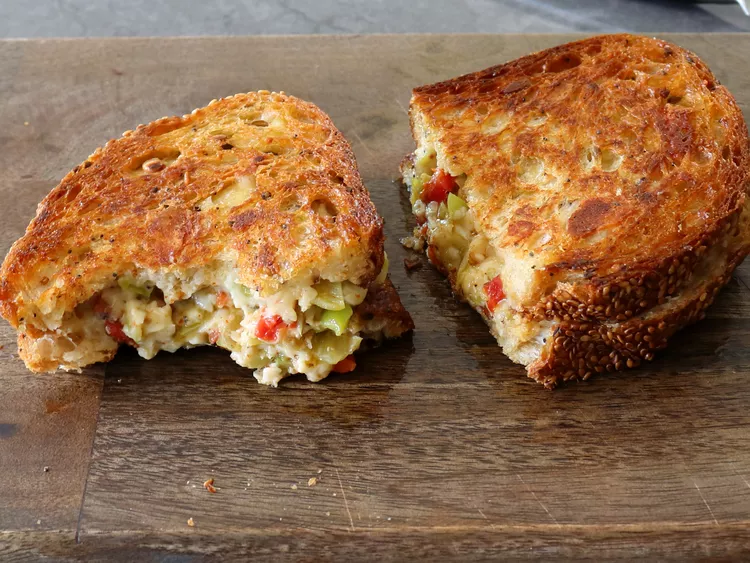

Italian Marinated Grilled Cheese

Description
This Italian marinated grilled cheese is made by briefly marinating 3 kinds of cheese with a quick oil and vinegar dressing, and including a few things you typically find in antipasto. It’s a new and amazing twist on the classic grilled cheese sandwich.
Ingredients
Cheese Filling
- 1 clove garlic, minced
- 1 tablespoon white wine vinegar
- 1 tablespoon olive oil
- freshly ground black pepper to taste
- 1 pinch chili flakes
- 1/4 teaspoon dried Italian herbs
- 2 ounces Monterey Jack cheese, grated
- 2 ounces Cheddar cheese, grated
- 1 slice provolone, quartered
- 1 rounded tablespoon diced roasted red peppers
- 1 rounded tablespoon diced pickled pepperoncini peppers
- 1 rounded tablespoon diced green olives
Sandwich
- 2 thick slices French bread
- 3 tablespoons olive oil
Steps
- Whisk garlic, vinegar, olive oil, black pepper, chili flakes, and herbs together in a bowl; stir in Monterey Jack, Cheddar, and provolone cheeses until combined.
- Stir in red peppers, pepperoncini, and olives. Wrap and let marinade in fridge for 15 minutes, or up to several hours.
- Pile the marinated cheese, beginning with the provolone, evenly onto 1 bread slice; cover with the other slice. Heat olive oil in a nonstick pan over medium heat.
- Fry sandwich until both sides are crisp and well-browned, and cheese filling has melted, about 3 minutes per side.